Die Umsatzsteuervoranmeldung umfasst 4 Seiten.
Die Formulare wurden von 45-48 nummeriert, wobei sich die Kennzahlpositionen dadurch verschoben haben und können im Unternehmensstamm nicht aus den Vorjahren übernommen werden.
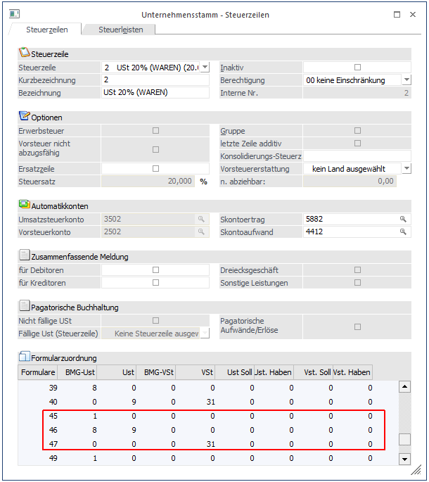
Werden die beiden Kennzahlen 056 und 057 bereits in einer Steuerzeile angesprochen, so ist hier zu beachten dass die Zuweisung zum UVA-Formular entsprechend manuell geändert werden muss!
Beispiel einer Steuerzeile die die Kennzahl 057 verwendet:
Für die Ausgabe des UVA-Formulars ab 01/2009 befindet sich die Kennzahl 057 auf der ersten Seite des UVA-Formulars. Dies entspricht nun dem Formular mit der Nr. 39 und der Position 50 (die Position bleibt gleich).
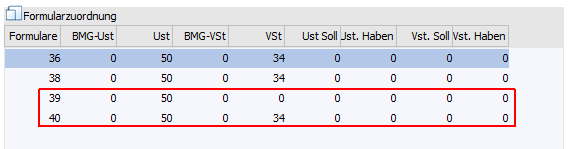
Für die Ausgabe des UVA-Formulars ab 01/2012 befindet sich die Kennzahl 057 nun auf der dritten Seite des UVA-Formulars. Dies entspricht nun dem Formular mit der Nr. 47 und der Position 50 (die Position bleibt gleich).
Die Position 34 (= Kennzahl 066) befindet sich nun auf der letzten Seite des UVA-Formulars.
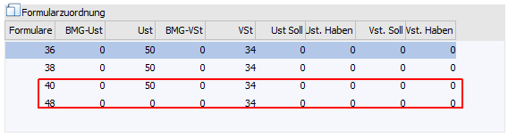
Erklärung zum Formular
Alle im Formular zu bedruckenden Felder sind mit Positionsnummern belegt, die dementsprechend in den jeweiligen Steuerzeilen hinterlegt sind. D.h. die Kennzahl 060 ist der Positionsnummer 31 zugeordnet, dementsprechend findet sich in der Steuerzeile der vorigen Abbildung die Nummer 60 am Formular 47 in der Spalte USt.
Hinweis
Positionen, die einen negativen Wert hätten, und dadurch als Berichtigung in der Kennzahl 067 oder 090 ausgewiesen werden, werden am Formular mit 0,00 angedruckt
Eine detaillierte Beschreibung, woraus sich die einzelnen errechneten Werte ergeben, finden Sie nach den folgenden Grafiken zu den neuen UVA-Formularen, wo die Belegung dargestellt wird.
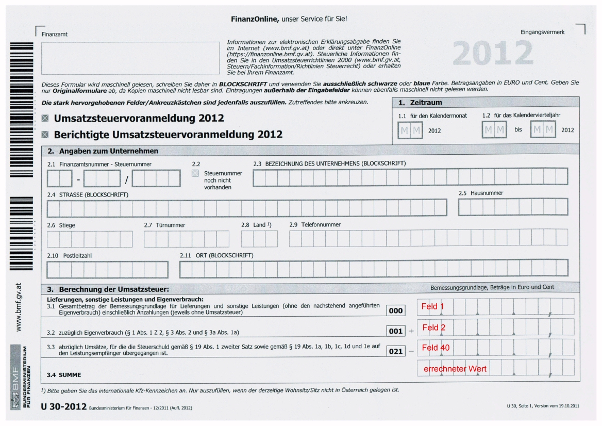
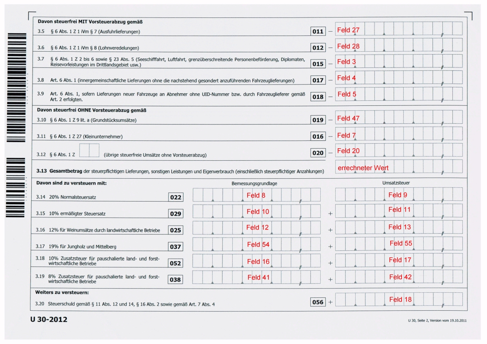
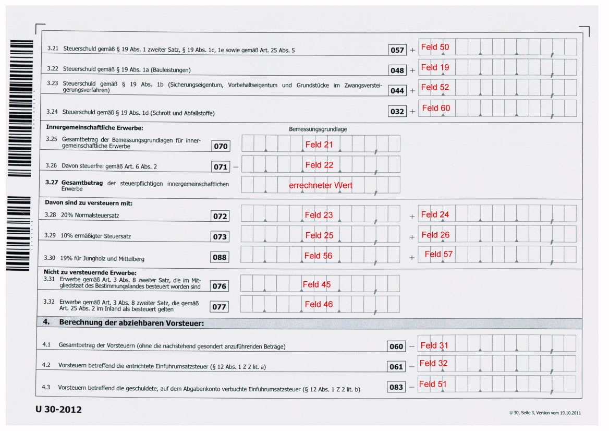
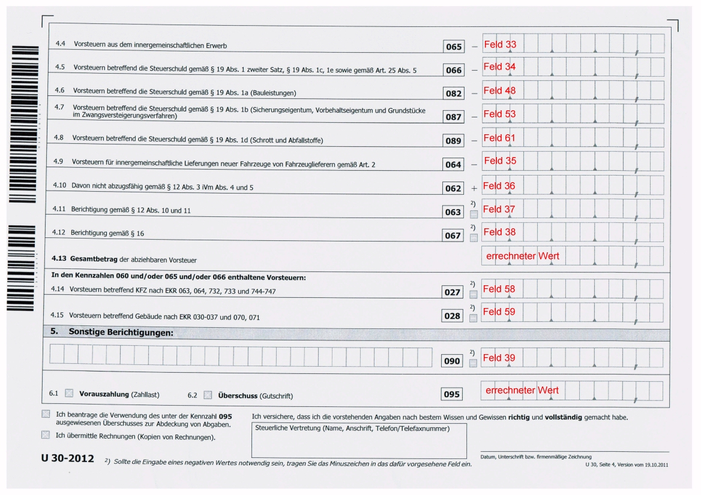
Beschreibung der errechneten Werte
Ø errechneter Wert "Summe":
Feld1+Feld2- Feld40
Ø errechneter Wert "Gesamtbetrag der steuerpflichtigen Lieferungen, sonstigen Leistungen und Eigenverbrauch (einschließlich steuerpflichtiger Anzahlungen)":
Feld1+Feld2-Feld40- Feld27- Feld28- Feld3- Feld4- Feld5- Feld47- Feld7-Feld20
Ø errechneter Wert "Gesamtbetrag der steuerpflichtigen innergemeinschaftlichen Erwerbe":
Feld21-Feld22
Ø errechneter Wert "Gesamtbetrag der abziehbaren Vorsteuer":
Feld31+Feld32+Feld51+Feld33+Feld34+Feld53+Feld61+Feld48+Feld35-Feld36-Feld37-Feld38
Ø errechneter Wert "Kennzahl 095":
Feld9+Feld11+Feld13+Feld55+Feld17+ Feld42+Feld18+Feld50
(Feld9+Feld11+Feld13+Feld15+Feld17+Feld42+Feld18+Feld50+Feld19+Feld52+Feld60+Feld24+Feld26) -
(Feld31+Feld32+Feld51+Feld33+Feld34+Feld53+Feld61+Feld48+Feld35-Feld36-Feld37-Feld38) + (Feld39)
Ø "Normale" Steuerzeilen
Die Position 1 enthält z. B. den Gesamtbetrag der Bemessungsgrundlagen für Lieferungen, sonstige Leistungen und den Eigenverbrauch einschließlich Anzahlungen. Für die entsprechenden Steuerzeilen (Erlöse 0 %, 10 %, 20 % etc.) heißt das, dass für das Formular 35 die Bemessungsgrundlage Umsatzsteuer in die Position 1 gerechnet werden muss.
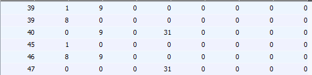
Ø Der "errechnete Wert" Summe berechnet sich aus:
Feld1+ Feld2-Feld40
Die Position 8 enthält den Gesamtbetrag der Bemessungsgrundlagen für 20 %ige Umsätze. D. h. in der Steuerzeile muss bei den entsprechenden Zeilen (Umsatzsteuerzeilen mit 20 %) bei der BMG UST 8 eingetragen werden. Da dieses Feld aber schon mit der Position 1 belegt ist, wird eine zweite Zeile eröffnet, wo wieder das Formular 46 eingetragen wird. Dort kann die Position 8 bei der BMG UST hinterlegt werden. Pro Steuerzeile kann ein Formular auch öfters verwendet werden, so dass jede Steuerzeile an jeder beliebigen Position hinterlegt werden kann.
Die Position 9 enthält den Steuerbetrag der 20 %igen Umsätze. Daher muss in den entsprechenden Steuerzeilen (Umsatzsteuerzeilen mit 20%) im Feld USt 9 eingetragen werden.
Beispiel für eine "normale" Steuerzeile
Nachdem in einigen Fällen für die Berechnung des Steuerbetrages die Bemessungsgrundlage herangezogen werden muss, und nicht die Gesamtsumme aus den gebuchten Steuerbeträge verwendet werden darf, werden nachstehend angeführte Kennzahlen am U30 daraus resultierend berechnet:
022 - USt - 20% Normalsteuersatz
029 - USt - 10% ermäßigter Steuersatz
025 - USt - 12% für Weinumsätze durch landwirtschaftliche Betriebe
037 - USt - 19% für Jungholz und Mittelberg
052 - USt - 10% Zusatzsteuer für pauschalierte land- und forstwirtschaftliche Betriebe
038 - USt - 8% Zusatzsteuer für pauschalierte land- und forstwirtschaftliche Betriebe
072 - Innergemeinschaftliche Erwerbe - 20% Normalsteuersatz
073 - Innergemeinschaftliche Erwerbe - 10% ermäßigter Steuersatz
088 - Innergemeinschaftliche Erwerbe - 19% für Jungholz und Mittelberg
065 - VSt - Vorsteuern aus innergemeinschaftlichen Erwerb (=072+073+075)
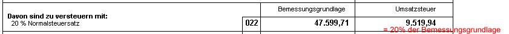
Am Steuerbeleg wird nun für jeden Prozentsatz eine Summenzeile gedruckt.
Entspricht der aus der Bemessung errechnete Steuerbetrag nicht der Summe der einzelnen Steuerbeträge, so wird nach der Zwischensumme eine weitere Zeile mit dem Wert "Steuer(Formular)" angedruckt (dies betrifft natürlich nur Umsatzsteuerzeilen).
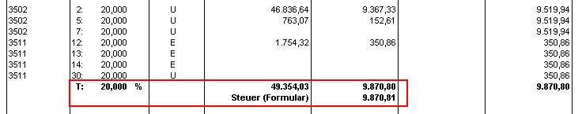
Sonderfälle von Steuerzeilen
Ø Einfuhrumsatzsteuer - Position 32 im Formular 47
Die Einfuhrumsatzsteuer muss, da es keine Bemessungsgrundlage und keinen Steuersatz gibt, immer manuell und direkt auf das jeweilige Konto gebucht werden. Dadurch ergibt sich für den Andruck auf das Formular ein besonderer Status. In der Steuerzeile der Einfuhrumsatzsteuer muss daher das Formular 40 hinterlegt werden, im Feld VSt-Soll wird 32 eingetragen.
Beispiel für die Definition der Steuerzeile "Einfuhrumsatzsteuer"
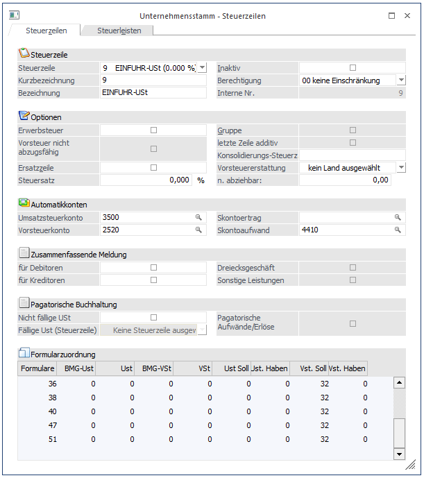
Einfuhrumsatzsteuer-Regelung ab 1. Oktober 2003
Zusätzlich zur bereits seit vielen Jahren bestehenden Möglichkeit, die Einfuhrumsatzsteuer (EUSt) an das Zollamt zu entrichten und sie dann (bei Vorliegen aller Voraussetzungen) in der beim Finanzamt einzureichenden Umsatzsteuervoranmeldung (UVA) als Vorsteuer wieder abzuziehen, besteht ab 1. Oktober 2003 für Schuldner der Einfuhrumsatzsteuer, die in Österreich zur Umsatzsteuer erfasst sind und Waren für ihr Unternehmen einführen, folgende Möglichkeit (§ 26 Abs. 3 Z 2 UStG 1994):
Die EUSt ist nicht an das Zollamt, sondern in der in einer Zollmitteilung festgelegten Höhe monatlich auf das beim Finanzamt geführte Abgabenkonto zu entrichten.
Bei vierteljährlichem Umsatzsteuervoranmeldungszeitraum ist anstelle des Monates das Kalendervierteljahr auch für die EUSt maßgeblich.
In der beim Finanzamt abzugebenden UVA kann die EUSt als Vorsteuer abgezogen werden, sodass bei vollständiger Vorsteuerabzugsberechtigung des Unternehmers kein faktischer Geldfluss mehr stattfindet.
Voraussetzung für die Anwendung der Neuregelung ist, dass bereits in der Zollanmeldung zur Überführung in den zollrechtlich freien Verkehr erklärt wird, von dieser Regelung Gebrauch zu machen.
In diesem Fall wird den betreffenden Einfuhrumsatzsteuerschuldnern von der Zollverwaltung monatlich eine Aufstellung übermittelt, in der unter Hinweis auf die jeweiligen Einfuhrabfertigungen bzw. Sammelanmeldungen die entsprechenden Einfuhrumsatzsteuerbeträge, für die von der Neuregelung des § 26 Abs. 3 Z 2 UStG 1994 Gebrauch gemacht wurde, für den betreffenden Monat ausgewiesen sind.
Dieser Betrag wird auf dem Finanzamtskonto als Belastung verbucht (Abgabencode "EU"). Die EUSt wird in diesem Fall am 15. Tag des auf den Voranmeldungszeitraum, in dem die EUSt entsteht, zweitfolgenden Kalendermonates fällig.
Sofern der Einfuhrumsatzsteuerschuldner zum Vorsteuerabzug berechtigt ist, kann im Ausmaß der Vorsteuerabzugsberechtigung in der UVA (U30) unter der Kennzahl 083 die geschuldete und auf dem Finanzamtskonto verbuchte EUSt als Vorsteuer in Abzug gebracht werden. Damit verringert sich die Abgabenschuld an Umsatzsteuer für den betreffenden Kalendermonat bzw. erhöht sich der Vorsteuer-Überschuss.
Ausschnitt aus der Umsatzsteuervoranmeldung
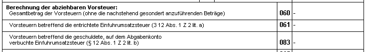
Es ist sicherzustellen, dass - sofern der Vorsteuerüberschuss
und/oder ein Guthaben zur Tilgung nicht ausreichen - die geschuldete EUSt bis
zur Fälligkeit entrichtet wird. Dies kann durch Zahlung oder Geltendmachung
einer Verrechnungsweisung erfolgen.
Andernfalls muss mit den üblichen Folgen
eines Zahlungsverzuges gerechnet werden.
Zu beachten ist, dass die EUSt eine eigene, von der "normalen" USt abgesonderte Abgabe ist, die nur in Bezug auf die Geltendmachung des Vorsteuerabzuges in der UVA geltend gemacht werden kann.
Sollte sich daher aus der UVA auch nach Abzug der EUSt eine Umsatzsteuerschuld ergeben, muss sowohl die "normale" USt (Abgabencode "U") als auch die EUSt (Abgabencode "EU") entrichtet werden.
Beispiel 1:
|
die Umsätze (20%) für den Monat Oktober 2012 betragen |
100.000,--€ |
|
Umsatzsteuer daher |
20.000,--€ |
|
"normale" Vorsteuer (KZ 060) |
-3.000,--€ |
|
EUSt NEU (KZ 083) |
-6.000,--€ |
|
Zahllast in der UVA (KZ 095) |
11.000,--€ |
Einzahlung mittels Zahlschein
|
|
· U 10/2003 |
11.000,--€ |
|
|
· EU 10/2003 |
6.000,--€ |
Anmerkung:
Die EUSt ist zwar in Höhe von 6.000,--€ einzuzahlen, hat jedoch die Zahllast der "normalen" USt um genau diesen Betrag vermindert.
Beispiel 2:
|
die Umsätze (20%) für den Monat Oktober 2003 betragen |
100.000,--€ |
|
Umsatzsteuer daher |
20.000,--€ |
|
"normale" Vorsteuer (KZ 060) |
-21.000,--€ |
|
EUSt NEU (KZ 083) |
-6.000,--€ |
|
Überschuss in der UVA (KZ 095) |
-7.000,--€ |
Dieser Betrag (7.000,--€) wird auf dem Finanzamtskonto gutgeschrieben.
Im Regelfall wird dadurch die EUSt-Schuld getilgt sein. Sofern jedoch auch nach dieser Gutschrift die EUSt (oder ein Teil davon) noch als Rückstand aufscheint, ist sie entweder durch Verwendung des UVA-Überschusses mittels Verrechnungsweisung oder durch gesonderte Einzahlung zu entrichten.
Anmerkung: Der Überschuss aus der "normalen" USt hat sich genau um den Betrag lt. KZ 083 (6.000,--€) erhöht. Ohne Geltendmachung der EUSt als Vorsteuer wäre der Vorsteuerüberschuss nur 1.000,--€.
Beispiel für die Definition einer Steuerzeile zur "Einfuhrumsatzsteuer NEU" ab 10/2003
Ebenso wie für die bereits verwendete Einfuhrumsatzsteuerzeile muss, da es keine Bemessungsgrundlage und keinen Steuersatz gibt, immer manuell und direkt auf das jeweilige Konto gebucht werden.
In der Steuerzeile der "Einfuhrumsatzsteuer-NEU" muss daher das Formular 40 hinterlegt werden, im Feld VSt-Soll wird 51 (das ist die neue Kennzahl 083) eingetragen.
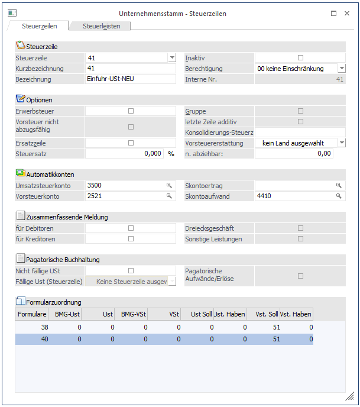